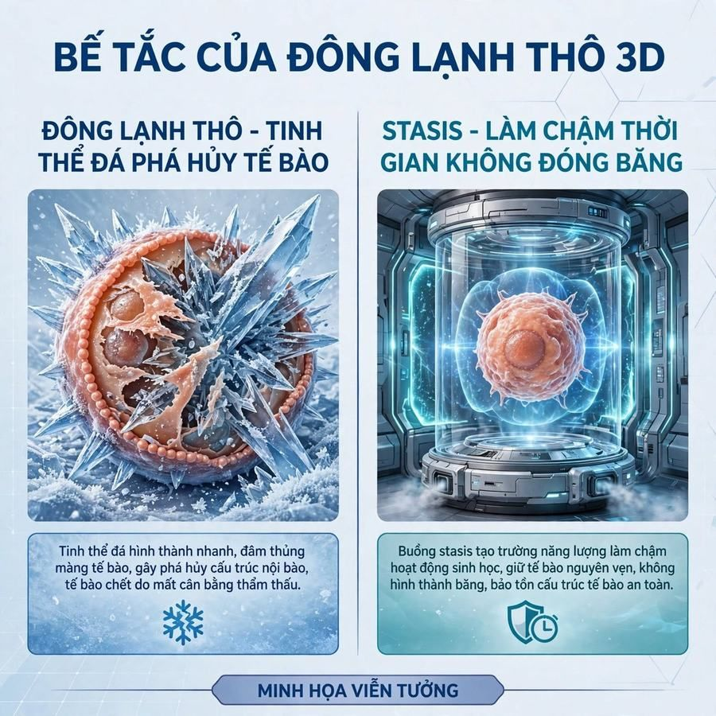
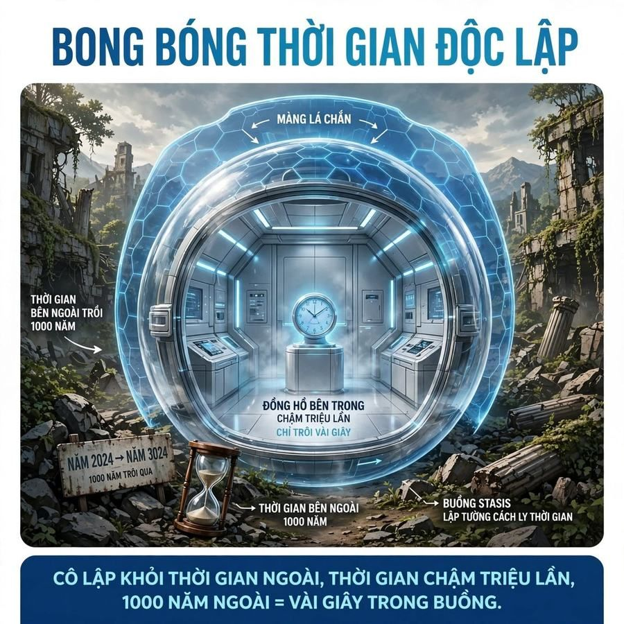
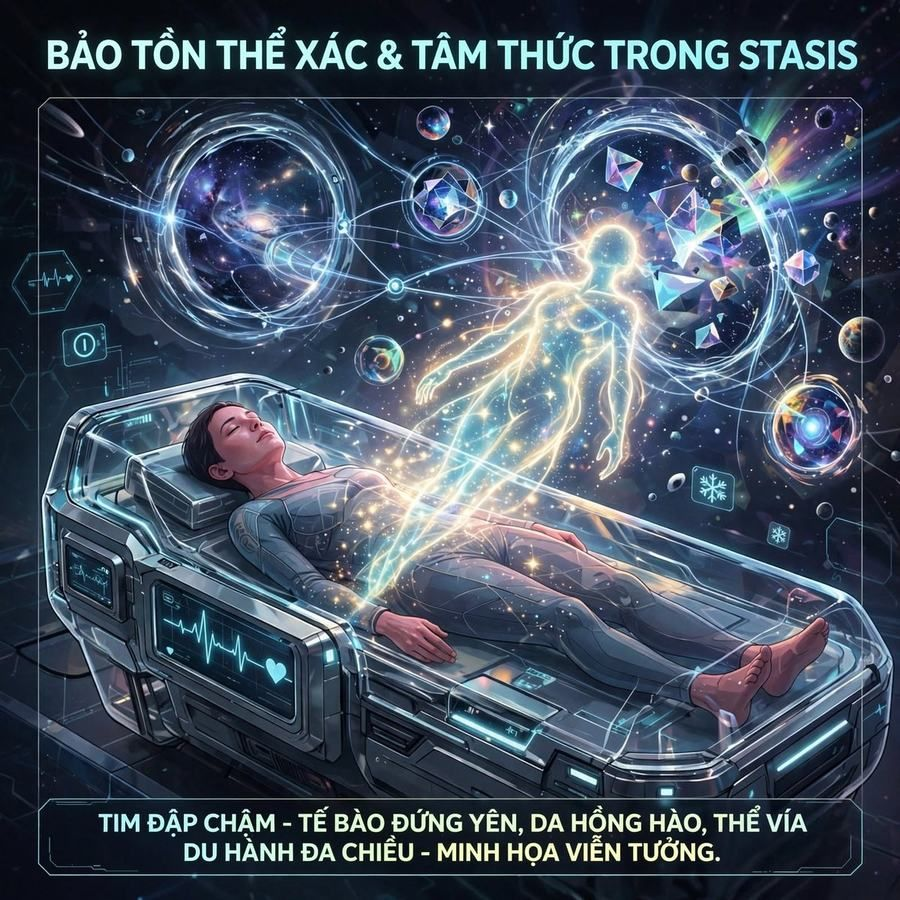
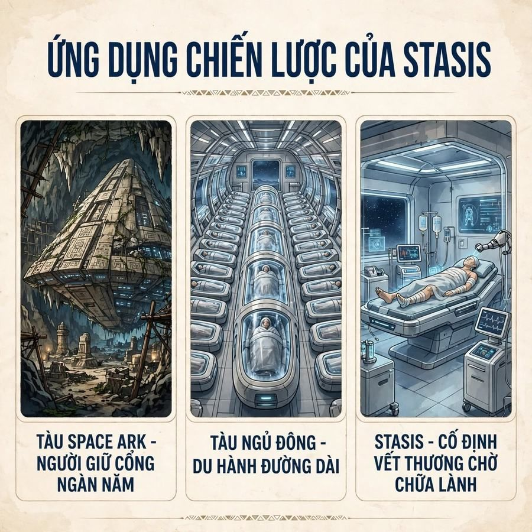
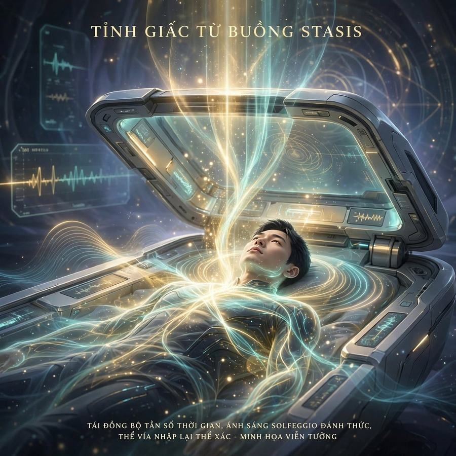
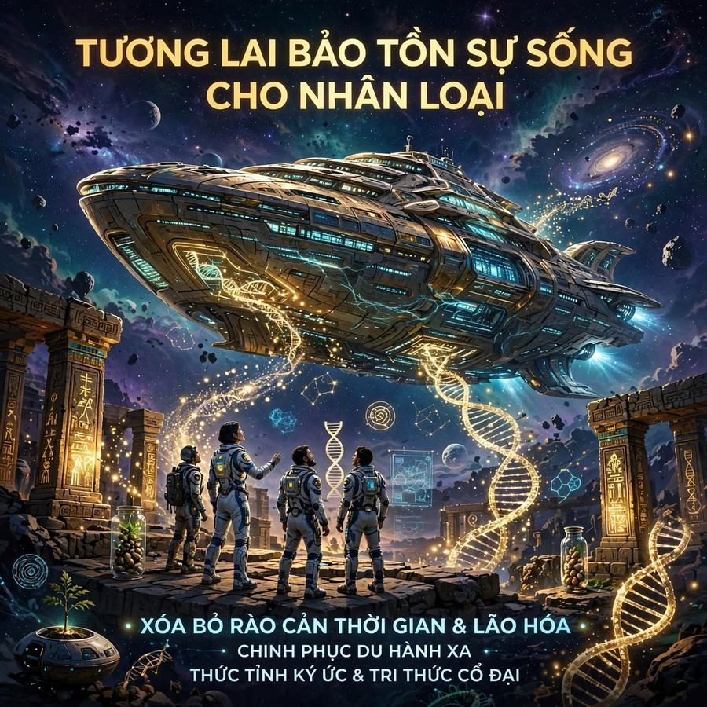

Trang chủ / Chuyên đề 8: Khoa Học & Công Nghệ / Kỳ 78
Chuyên đề 8 · Kỳ 78 / 90
CÔNG NGHỆ NGỦ ĐÔNG TẦN SỐ STASIS & BONG BÓNG THỜI GIAN (TIME DILATION)

Bạn đã bao giờ tự hỏi: Làm thế nào các phi hành đoàn hay các sinh mệnh ngoài hành tinh có thể vượt qua những hành trình vũ trụ kéo dài hàng nghìn năm, hoặc lưu giữ thể xác vật lý của họ suốt hàng thiên niên kỷ bên trong các con tàu cổ đại mà không hề bị lão hóa, phân hủy hay tổn thương tế bào? Tại sao có những sinh mệnh cổ xưa bước ra khỏi buồng ngủ đông sau hàng nghìn năm mà làn da vẫn hồng hào, cơ thể vẫn giữ nguyên mức năng lượng sinh học như thể họ chỉ mới chợp mắt vài phút?
Trong nền y học và khoa học thô 3D hiện tại của Trái Đất, khái niệm "bảo tồn cơ thể" thường gắn liền với kỹ thuật đông lạnh sinh học (Cryogenics) — tức là hạ nhiệt độ xuống độ âm cực sâu để đóng băng dòng máu và tế bào. Tuy nhiên, phương pháp thô sơ này gặp phải những tử huyệt chết người: Các tinh thể đá hình thành trong tế bào làm rách vỡ màng sinh học, làm đứt gãy chuỗi DNA và hủy hoại hệ thần kinh phức tạp.
Trái lại, đối với các nền văn minh thiên hà tiên tiến, bảo tồn cơ thể không phải là đóng băng vật chất, mà là Điều biến Dòng chảy Thời gian Lượng tử (Temporal Modulation)!
Bằng cách làm chủ Công nghệ Ngủ đông Tần số Stasis (Stasis Technology) và Bong bóng Thời gian Độc lập (Time Dilation Bubble), họ có thể cố định nhịp độ trôi của thời gian vật lý xung quanh thể xác sinh học về mức gần như bằng không.
Hãy cùng bước vào thế giới khoa học tối thượng của thiên hà để giải mã trọn vẹn nguyên lý vận hành của Buồng Ngủ đông Tần số Stasis, Bong bóng Thời gian Độc lập, Cơ chế Cố định Sinh học và Ứng dụng trong các Chuyến Du hành Vũ trụ Siêu chiều!
✦ ✦ ✦1. BỐI CẢNH VÀ BẾ TẮC CỦA CÔNG NGHỆ ĐÔNG LẠNH THÔ 3D
Để thấy được bước nhảy vọt vĩ đại của công nghệ Stasis, trước hết chúng ta cần nhìn lại những rào cản mang tính nguyên lý của kỹ thuật đông lạnh sinh học thô sơ trên Trái Đất.
A. Sự Phá hủy Tế bào trong Kỹ thuật Đông lạnh Thô (Cryogenics)
- Sự hình thành Tinh thể Đá: Khi nhiệt độ cơ thể hạ xuống dưới 0 độ C, nước bên trong và bên ngoài tế bào đóng băng, giãn nở và biến thành các tinh thể đá sắc nhọn. Các tinh thể này đâm thủng màng tế bào, xé rách các mạch máu vi mô và làm sụp đổ hệ thống mô sinh học.
- Tổn thương Hệ Thần kinh & DNA: Ngay cả khi sử dụng các chất chống đông dung dịch hóa học, quá trình đóng băng và rã đông vẫn làm đứt gãy các chuỗi DNA, làm biến tính protein và tiêu diệt hoàn toàn các liên kết nơ-rôn thần kinh trong não bộ. Khi rã đông, cơ thể không thể tự phục hồi lại sự sống nguyên vẹn.
B. Quan điểm Vật lý Thiên hà về Thời gian và Sự Lão hóa
Khoa học thiên hà tiên tiến khẳng định những nguyên lý bản chất:
- Thời gian là một Nhịp điệu Dao động (Temporal Vibration Rate): Thời gian trôi nhanh hay chậm đối với một vật thể phụ thuộc vào tốc độ dao động nguyên tử và mật độ từ trường của dải không gian bao bọc vật thể đó.
- Lão hóa là sự Trao đổi Chất theo Thời gian: Sự lão hóa tế bào chỉ xảy ra khi phản ứng hóa sinh diễn ra nối tiếp nhau dưới tác động của dòng chảy thời gian địa phương.
- Nguyên lý Stasis — Làm chậm Thời gian chứ không Đóng băng Vật chất: Nếu có thể cách ly cơ thể khỏi dòng chảy thời gian của vũ trụ bên ngoài và làm chậm nhịp đập thời gian nội tại về mức \\(1/10.000\\) hoặc bằng 0, thể xác sẽ đứng yên trong thời gian mà không cần hạ nhiệt độ xuống độ âm!

2. NGUYÊN LÝ HOẠT ĐỘNG CỦA BONG BÓNG THỜI GIAN ĐỘC LẬP (TIME DILATION BUBBLE)
Chìa khóa cốt lõi của buồng ngủ đông Stasis chính là việc tạo ra một Bong bóng Không-Thời gian Độc lập (Isolated Temporal Bubble) bao bọc xung quanh người nằm bên trong.
A. Cấu tạo của Buồng Ngủ đông Stasis (Stasis Pod Architecture)
- Thân Buồng bằng Hợp kim Tinh thể Siêu dẫn: Buồng Stasis có hình nhộng hoặc hình bát diện, được đúc từ hợp kim tinh thể thạch anh kết hợp với thủy ngân lỏng siêu dẫn. Thân buồng chứa các cuộn cảm từ trường lượng tử hình bánh xe xuyến (Torus Cores).
- Mạng lưới Máy phát Trường Temporal Emitters: Chạy dọc theo hai bên vách buồng là hàng ngàn vi cảm biến và máy phát trường thời gian (Temporal Field Emitters) được kết nối trực tiếp với lò phản ứng Năng lượng Điểm Không (ZPE).
B. Quy trình Điều biến và Bẻ cong Dòng Thời gian
Khi một sinh mệnh bước vào buồng Stasis và kích hoạt quy trình:
- Cô lập dải Từ trường Không gian: Máy phát tạo ra một dải màng lá chắn năng lượng lượng tử bao bọc kín không gian bên trong buồng. Dải lá chắn này ngắt hoàn toàn sự kết nối từ trường và hấp dẫn giữa bên trong buồng với vũ trụ bên ngoài.
- Kéo dãn Tốc độ Trôi của Thời gian (Temporal Dilation): Máy phát trường thời gian phát ra dải sóng dừng tần số siêu cao, làm biến dạng mật độ của trường Ether bên trong buồng. Tốc độ trôi của thời gian bên trong buồng được làm chậm lại hàng triệu lần so với bên ngoài!
- Hiện tượng Tương đối Thời gian: Một nghìn năm trôi qua trên Trái Đất hoặc trong không gian bên ngoài, nhưng đối với không gian bên trong buồng Stasis, dòng thời gian chỉ mới trôi qua vài giây hoặc vài phút!

3. CƠ CHẾ BẢO TỒN THỂ XÁC VÀ TÂM THỨC TRONG TRẠNG THÁI STASIS
Khác biệt hoàn toàn với hình ảnh một cái xác đông lạnh cứng đờ, sinh mệnh bên trong buồng Stasis duy trì một trạng thái sinh học vô cùng kỳ diệu gọi là Trạng thái Cố định Sinh học Thuần khiết (Pure Biological Stasis).
A. Trạng thái Tim đập Chậm và Tế bào Đứng yên
- Nhịp sinh học giảm về mức tối thiểu: Nhịp tim, huyết áp và hoạt động sóng não của sinh mệnh được giảm xuống nhịp độ cực nhẹ. Nhịp tim có thể chỉ đập 1 nhịp mỗi vài giờ hoặc vài ngày, nhưng dòng máu vẫn giữ nguyên độ lỏng tự nhiên, làn da vẫn hồng hào và đầy đặn.
- Ngừng hoàn toàn quá trình Phân bào và Lão hóa: Do dòng thời gian nội tại bị làm chậm gần như tuyệt đối, các tế bào không thực hiện quá trình trao đổi chất, không sinh ra các gốc tự do hay độc tố. Quá trình lão hóa bị đóng băng hoàn toàn.
B. Trạng thái Tâm thức: Du hành Thể Phách hoặc Giấc ngủ Siêu nhận thức
Tâm thức của sinh mệnh trong thời gian ngủ đông Stasis không bị tiêu biến mà được duy trì theo hai phương thức:
- Giấc ngủ Phục hồi Siêu sâu (Deep Regenerative Sleep): Tâm thức chìm vào dải sóng Theta/Delta thuần khiết, trải nghiệm sự phục hồi toàn diện về mặt năng lượng tinh thần.
- Du hành Thể Phách & Phóng chiếu Tâm thức (Astral Projection): Ở các sinh mệnh tiến hóa cao, trong khi thể xác vật lý nằm cố định trong buồng Stasis, thể tâm thức (Astral Body) của họ có thể tự do rời khỏi thể xác, du hành qua các dải thực tại đa chiều, học hỏi tri thức hoặc thực hiện các sứ mệnh tâm thức trong thiên hà trước khi quay trở lại thể xác!

4. CÁC ỨNG DỤNG CHIẾN LƯỢC CỦA CÔNG NGHỆ STASIS TRONG VŨ TRỤ
Công nghệ Ngủ đông Tần số Stasis không chỉ được dùng cho mục đích y tế mà đóng vai trò như một trụ cột chiến lược trong nhiều hoạt động của các nền văn minh thiên hà:
A. Bảo tồn các Sinh mệnh Cổ đại trên các con tàu Space Arks
- Những "Người giữ Cổng" ngàn năm: Như đã biết trong các tài liệu thiên hà, nhiều nhà khoa học, tư tế và các đại sứ ngoài hành tinh thuộc các dòng họ cổ đại đã tự nguyện đi vào các buồng Stasis giấu sâu bên trong các con tàu cổ đại (Space Arks) dưới lòng đất hoặc dưới băng tuyết.
- Chờ đợi Thời điểm Kích hoạt: Họ nằm ngủ đông hàng ngàn năm để bảo toàn thể xác nguyên thủy và mã di truyền gốc, chờ đợi khi dải tần số hành tinh tăng lên và thời điểm thích hợp đến để tỉnh giấc, bước ra hướng dẫn và trao lại tri thức cho nhân loại.
B. Du hành Không gian Đường dài (Long-Distance Deep Space Travel)
- Khái niệm "Tàu Ngủ đông" (Stasis Colony Ships): Khi di chuyển qua các khoảng cách liên thiên hà hoặc khi các hạm đội di cư phải vượt qua những vùng không gian chưa có Cổng Sao (Stargates), toàn bộ hành khách sẽ đi vào các buồng Stasis.
- Tiết kiệm Nguồn lực Sinh thái: Nhờ công nghệ Stasis, phi thuyền không cần phải tiêu tốn nguồn cung cấp lương thực, nước uống hay oxy khổng lồ cho hàng ngàn người trong suốt chuyến du hành kéo dài hàng thập kỷ.
C. Cứu chữa các Ca Chấn thương Năng lượng Cực nặng
- Đóng băng Tổn thương để Chờ Chữa lành: Khi một phi công hay sinh mệnh bị chấn thương thể xác nặng hoặc bị nhiễm xạ năng lượng tiêu cực mà thiết bị y tế tại chỗ chưa thể xử lý ngay lập tức, họ được đưa ngay vào buồng Stasis.
- Ngăn ngừa Tử vong: Buồng Stasis lập tức cố định vết thương, ngăn không cho tổn thương lan rộng hay tử vong xảy ra, giữ cho cơ thể ở trạng thái nguyên vẹn cho đến khi đưa về trạm y tế trung tâm hoặc buồng Med-Bed để tái tạo hoàn toàn.

5. QUY TRÌNH KÍCH HOẠT VÀ TỈNH GIẤC TỪ BUỒNG STASIS (AWAKENING PROCESS)
Mở buồng Stasis không đơn giản là bấm nút mở nắp. Đây là một quy trình tái đồng bộ tần số vô cùng tinh tế và chuẩn xác để đảm bảo sinh mệnh tỉnh dậy một cách an toàn nhất.
A. Tái Đồng bộ Tần số Thời gian (Temporal Re-synchronization)
- Rút ngắn dải Giãn nở Thời gian: Máy phát trường thời gian từ từ nâng tốc độ trôi của dòng thời gian bên trong buồng Stasis trở lại đồng bộ với nhịp đập thời gian của vũ trụ bên ngoài.
- Chiếu dải Ánh sáng Tần số Solfeggio: Mái vòm buồng phát ra các chùm ánh sáng quang phổ màu kết hợp với tần số âm thanh dịu nhẹ để kích thích hệ thần kinh và nhịp tim từ từ tăng tốc trở lại.
B. Tái Kết nối Thể Phách và Thể Xác
- Máy tính sinh học của buồng phát ra trường từ trường hướng dẫn, giúp thể tâm thức (Astral Body) của sinh mệnh định vị và nhập trọn vẹn trở lại vào thể xác vật lý.
- Sinh mệnh mở mắt, hít một hơi thở sâu không khí tươi mới. Không có cảm giác đau đớn, không có hiện tượng mất trí nhớ hay suy giáp. Chỉ trong vài phút, sinh mệnh hoàn toàn hồi phục thể lực, minh mẫn tư duy và có thể bước ra khỏi buồng Stasis làm việc ngay lập tức!

6. BÀI HỌC VÀ TƯƠNG LAI CỦA CÔNG NGHỆ BẢO TỒN SỰ SỐNG CHO NHÂN LOẠI
Sự hiểu biết về Công nghệ Ngủ đông Tần số Stasis & Bong bóng Thời gian mang lại những bài học và tầm nhìn khoa học vượt bậc cho tương lai của nhân loại Trái Đất:
- Xóa bỏ Rào cản Thời gian và Lão hóa: Khi khoa học Trái Đất vượt qua tư duy vật lý thô và làm chủ được các kỹ thuật điều biến trường từ trường thời gian, chúng ta sẽ mở ra những khả năng bảo tồn sự sống vĩ đại, giúp con người chinh phục những hành trình du hành vũ trụ xa xôi mà không bị trói buộc bởi tuổi thọ ngắn ngủi.
- Thức tỉnh Ký ức Lịch sử và Tri thức Cổ đại: Việc nghiên cứu và thấu hiểu công nghệ Stasis giúp con người hiểu rõ cơ chế giải mật các di sản cổ xưa, sẵn sàng chào đón sự trở lại của những nhà khai sáng cổ đại đang chuẩn bị tỉnh giấc từ các con tàu Space Arks trên khắp thế giới!
